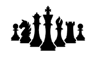

I spent a lot of my time outside of school this year playing soccer. I played for both a club team, and the high school varsity team. I had an amazing time with some great people on both of my teams this year, and the cherry on top was winning NCS with the high school team.
Another thing I did quite a bit outside of school was play chess. My great grandfather taught me to play when I was very young, and I have enjoyed it ever since. Ive put quite a bit of time into it this year, and seen very noticeable improvements in my level over time.